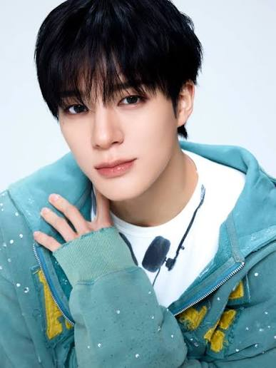

Jeno

Jeno Lee merupakan salah satu anggota NCT DREAM yang bergabung dengan SM Entertainment pada tahun 2013. Ia resmi debut pada 25 Agustus 2016 bersama NCT DREAM. Jeno dikenal sebagai rapper, dancer, dan performer berbakat. Rap-nya yang khas serta gerakan tariannya yang kuat menjadi daya tarik tersendiri. Ia juga memiliki karisma panggung yang memukau. Sejak debut, Jeno terus menunjukkan perkembangan dan dedikasinya. Kehadirannya memberikan warna tersendiri bagi NCT DREAM.